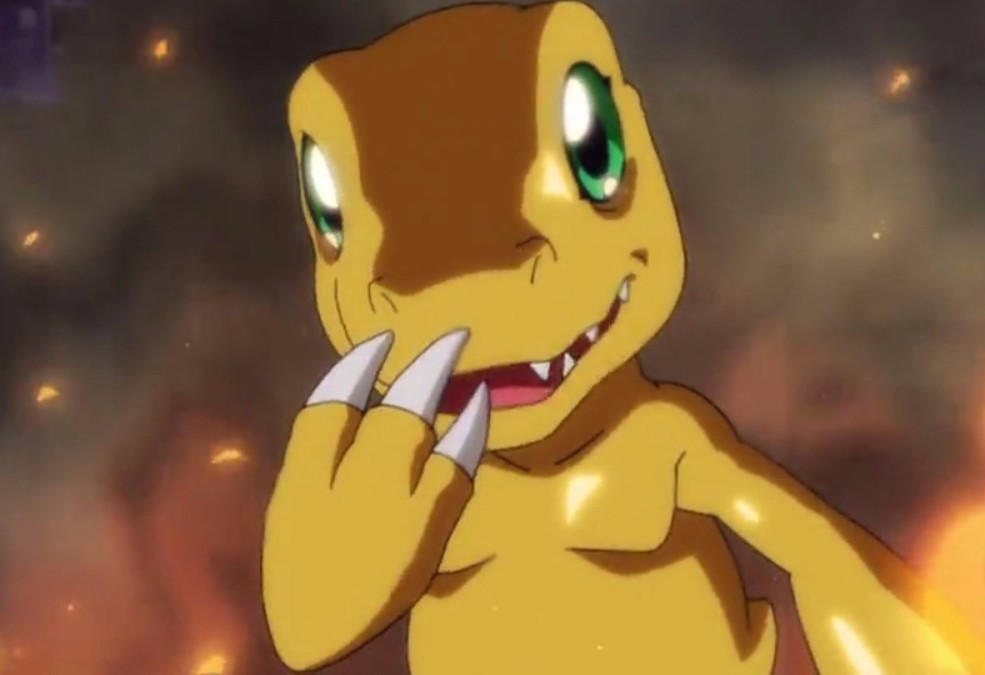
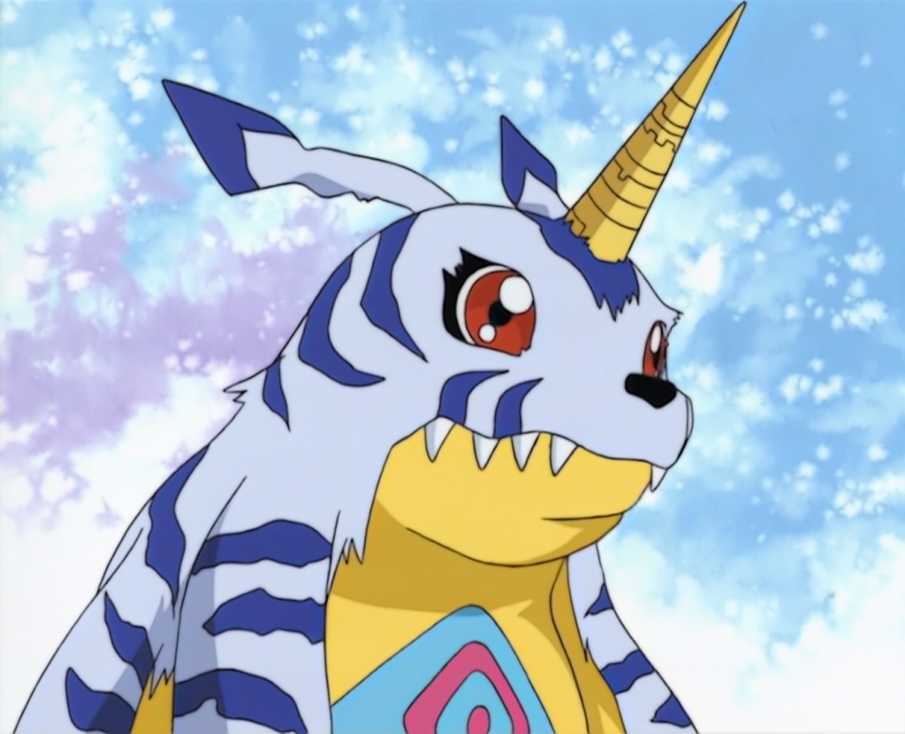
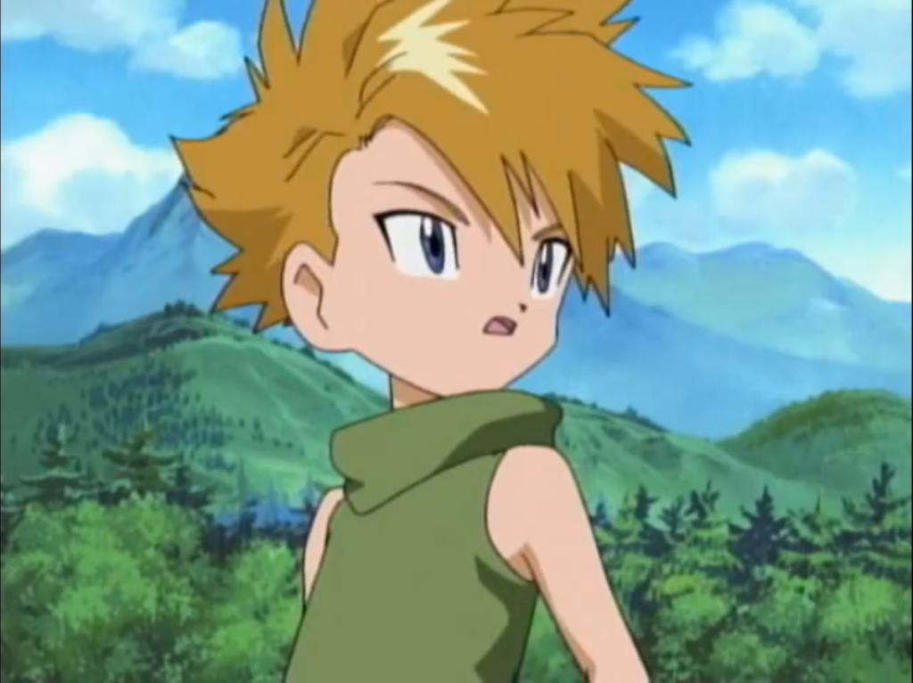
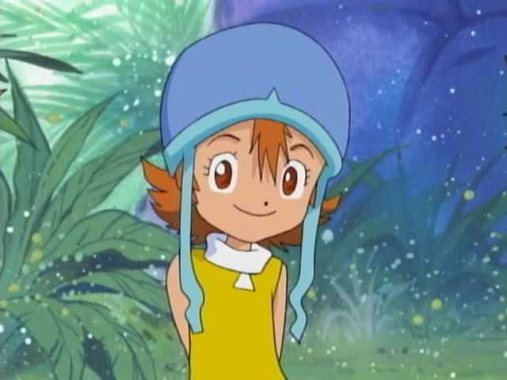
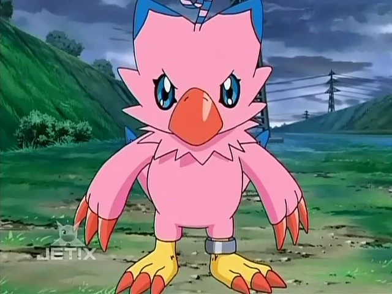
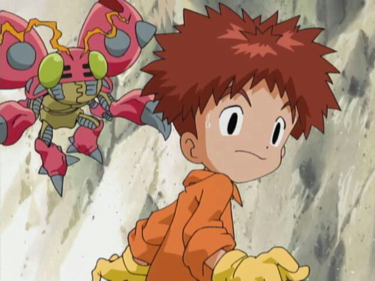
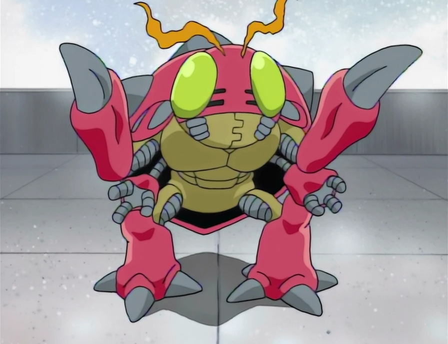
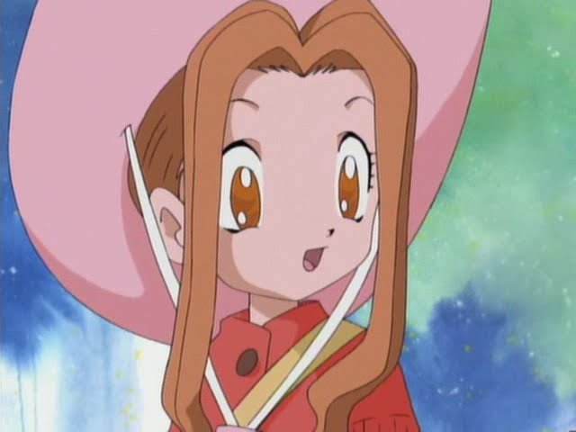
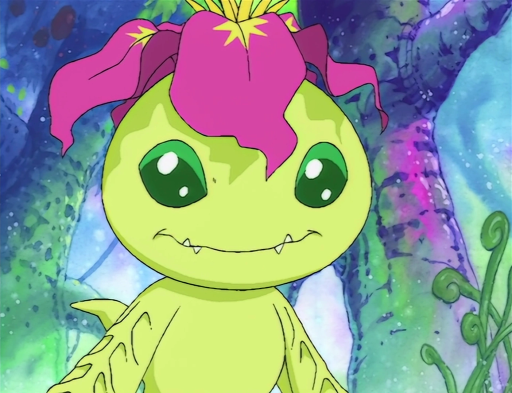

Tai Kamiya (Taichi Yagami)
Tai es el líder natural de los Niños Elegidos en Digimon Adventure. Siempre dispuesto a liderar al grupo, Tai aprende en la serie que ser un líder significa mucho más que simplemente ser el más fuerte. Su Digimon compañero es Agumon, un Digimon de tipo reptil que puede evolucionar en Greymon.

Agumon
Como el Digimon de Tai, Agumon es probablemente la criatura más icónica de toda la serie. Agumon tiene múltiples formas evolutivas, como Greymon, MetalGreymon y WarGreymon. Su vínculo con Tai lo convierten en un símbolo de la relación entre los Digimon y los Niños Elegidos. Además, sus evoluciones están entre las más poderosas del Mundo Digital.

Gabumon
Gabumon es el fiel compañero de Matt, siempre apoyándolo en sus momentos más difíciles. De la misma forma que Agumon, Gabumon puede evolucionar, y su forma más icónica es MetalGarurumon, una fusión perfecta entre bestia y máquina.

Matt Ishida (Yamato Ishida)
Matt es el “rival amistoso” de Tai. Su carácter es más introvertido, lo que a menudo le lleva a chocar con Tai en cuanto a decisiones grupales. Con el tiempo, Matt se convierte en amigo de Tai, aprendiendo a equilibrar su independencia con el trabajo en equipo. Su Digimon compañero es Gabumon.

Sora Takenouchi
Sora es uno de los personajes femeninos más fuertes de la serie. Muy protectora con sus amigos, su Digimon es Biyomon, un reflejo de su gran corazón y disposición para ayudar a los demás.

Biyomon
Biyomon es una Digimon de tipo pájaro que evoluciona en la majestuosa Garudamon. La relación de Biyomon con Sora es especialmente emotiva, ya que ambas aprenden a confiar más en sí mismas y en los demás a lo largo de la serie.

Izzy Izumi (Koushiro Izumi)
Izzy es el genio del grupo, apasionado por la tecnología y siempre investigando nuevas formas de ayudar a sus amigos. Su curiosidad lo lleva a descubrir muchos secretos del Mundo Digital. Su compañero Digimon, Tentomon, es una criatura igualmente curiosa y leal a Izzy.

Tentomon
Tentomon es el compañero Digimon perfecto para Izzy, ya que ambos comparten una pasión por la ciencia y el conocimiento. Tentomon puede evolucionar en Kabuterimon, un formidable Digimon de tipo insecto que es fundamental en muchas batallas importantes.

Mimi Tachikawa
Mimi comienza como una niña algo consentida y preocupada por su apariencia, pero con el tiempo se convierte en uno de los personajes de Digimon más empáticos. A lo largo de la serie, Mimi aprende a valorar la amistad y el trabajo en equipo. Su compañero Digimon, Palmon, es un fiel reflejo de su crecimiento personal.

Palmon
Palmon es una Digimon de tipo planta que, a través de sus evoluciones, demuestra ser realmente fuerte. Su relación con Mimi es particularmente especial, ya que Palmon le enseña la importancia de ser honesta consigo misma y con los demás. Su forma evolutiva más poderosa es Lillymon.